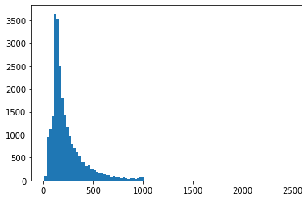
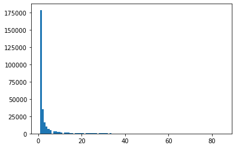
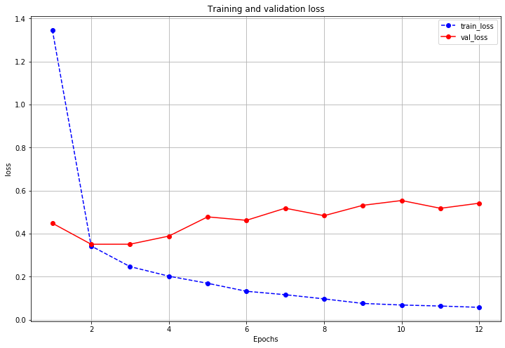
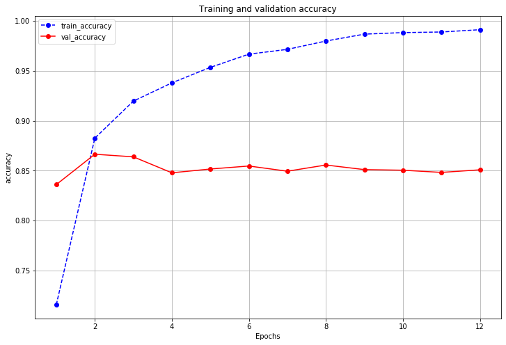

在现实世界中, 文本这种原生的数据类型的数量是很多的, 因为语言是我们交换信息的渠道. 而相比传统的机器学习方法, 基于深度学习的方法在自然语言处理上, 取得了巨大的成功.
本篇的主要目的不是深入探讨文本处理的细节, 而是通过TensorFlow来展示基础的文本建模流程.
数据分析
这里使用经典的IMDB数据集, 来进行文本数据建模, 做情感分析. 首先, 对原始数据进行一些简单的分析.
1 | import numpy as np |
20000
1 | np.sum(train_label_list) |
10062
1 | train_sent_list[: 2] |
["It really boggles my mind when someone comes across a movie like this and claims it to be one of the worst slasher films out there. This is by far not one of the worst out there, still not a good movie, but not the worst nonetheless. Go see something like Death Nurse or Blood Lake and then come back to me and tell me if you think the Night Brings Charlie is the worst. The film has decent camera work and editing, which is way more than I can say for many more extremely obscure slasher films.<br /><br />The film doesn't deliver on the on-screen deaths, there's one death where you see his pruning saw rip into a neck, but all other deaths are hardly interesting. But the lack of on-screen graphic violence doesn't mean this isn't a slasher film, just a bad one.<br /><br />The film was obviously intended not to be taken too seriously. The film came in at the end of the second slasher cycle, so it certainly was a reflection on traditional slasher elements, done in a tongue in cheek way. For example, after a kill, Charlie goes to the town's 'welcome' sign and marks the population down one less. This is something that can only get a laugh.<br /><br />If you're into slasher films, definitely give this film a watch. It is slightly different than your usual slasher film with possibility of two killers, but not by much. The comedy of the movie is pretty much telling the audience to relax and not take the movie so god darn serious. You may forget the movie, you may remember it. I'll remember it because I love the name.\n",
"Mary Pickford becomes the chieftain of a Scottish clan after the death of her father, and then has a romance. As fellow commenter Snow Leopard said, the film is rather episodic to begin. Some of it is amusing, such as Pickford whipping her clansmen to church, while some of it is just there. All in all, the story is weak, especially the recycled, contrived romance plot-line and its climax. The transfer is so dark it's difficult to appreciate the scenery, but even accounting for that, this doesn't appear to be director Maurice Tourneur's best work. Pickford and Tourneur collaborated once more in the somewhat more accessible 'The Poor Little Rich Girl,' typecasting Pickford as a child character.\n"]
可以看到, 训练集有20000条样本, 正负样本各占一半, 接下来再看测试集样本.
1 | test_sent_list = [] |
5000
1 | np.sum(test_label_list) |
2438
测试集有5000条样本, 正负样本也是各占一半.
下面再进行一下简单的句子长度统计和词频统计.
1 | # 统计句子长度 |
1 | # 绘制句子长度直方图 |

可以看到, 大部分的句子长度小于500, 集中于200附近, 由此后续将文本截断长度设置为200.
1 | # 统计词频 |
1 | # 总的词汇(包括标点, 其它字符)有约29万个 |
290691
1 | # 按词频排序, 查看出现次数最多的词汇, 发现个别词汇出现次数很多 |
[('the', 287012), ('a', 155089), ('and', 152645), ('of', 142970), ('to', 132566), ('is', 103225), ('in', 85576), ('that', 64553), ('I', 64024), ('this', 57166), ('it', 54404), ('/><br', 50935), ('was', 46697), ('as', 42507), ('with', 41717), ('for', 41065), ('but', 33780), ('The', 33095), ('on', 30765), ('movie', 30480), ('are', 28497), ('his', 27686), ('film', 27389), ('have', 27124), ('not', 26258), ('be', 25509), ('you', 25108), ('he', 21674), ('by', 21422), ('at', 21295)]
1 | # 不包括出现频次特别高的词汇, 绘制词频直方图 |
(array([1.78939e+05, 3.55410e+04, 1.64970e+04, 9.91400e+03, 6.79800e+03,
4.93300e+03, 0.00000e+00, 3.69100e+03, 3.04000e+03, 2.48100e+03,
2.08100e+03, 1.82100e+03, 0.00000e+00, 1.53300e+03, 1.32100e+03,
1.16800e+03, 1.06300e+03, 8.84000e+02, 0.00000e+00, 8.43000e+02,
7.69000e+02, 6.78000e+02, 6.56000e+02, 6.00000e+02, 0.00000e+00,
5.21000e+02, 5.12000e+02, 4.59000e+02, 4.19000e+02, 4.15000e+02,
3.73000e+02, 0.00000e+00, 3.56000e+02, 3.35000e+02, 2.78000e+02,
3.09000e+02, 3.08000e+02, 0.00000e+00, 2.83000e+02, 2.47000e+02,
2.40000e+02, 2.47000e+02, 2.07000e+02, 0.00000e+00, 2.14000e+02,
2.02000e+02, 1.94000e+02, 1.95000e+02, 1.64000e+02, 0.00000e+00,
1.63000e+02, 1.72000e+02, 1.48000e+02, 1.61000e+02, 1.53000e+02,
1.47000e+02, 0.00000e+00, 1.34000e+02, 1.42000e+02, 1.12000e+02,
1.33000e+02, 1.15000e+02, 0.00000e+00, 1.14000e+02, 1.09000e+02,
1.03000e+02, 1.04000e+02, 9.70000e+01, 0.00000e+00, 9.50000e+01,
1.11000e+02, 9.70000e+01, 7.10000e+01, 9.20000e+01, 0.00000e+00,
9.20000e+01, 7.50000e+01, 7.40000e+01, 8.70000e+01, 7.00000e+01,
7.80000e+01, 0.00000e+00, 6.00000e+01, 5.80000e+01, 5.30000e+01,
7.10000e+01, 7.00000e+01, 0.00000e+00, 7.10000e+01, 6.30000e+01,
4.40000e+01, 7.00000e+01, 5.60000e+01, 0.00000e+00, 6.10000e+01,
5.10000e+01, 5.70000e+01, 5.40000e+01, 5.30000e+01, 2.10000e+01]),
array([ 1. , 1.84, 2.68, 3.52, 4.36, 5.2 , 6.04, 6.88, 7.72,
8.56, 9.4 , 10.24, 11.08, 11.92, 12.76, 13.6 , 14.44, 15.28,
16.12, 16.96, 17.8 , 18.64, 19.48, 20.32, 21.16, 22. , 22.84,
23.68, 24.52, 25.36, 26.2 , 27.04, 27.88, 28.72, 29.56, 30.4 ,
31.24, 32.08, 32.92, 33.76, 34.6 , 35.44, 36.28, 37.12, 37.96,
38.8 , 39.64, 40.48, 41.32, 42.16, 43. , 43.84, 44.68, 45.52,
46.36, 47.2 , 48.04, 48.88, 49.72, 50.56, 51.4 , 52.24, 53.08,
53.92, 54.76, 55.6 , 56.44, 57.28, 58.12, 58.96, 59.8 , 60.64,
61.48, 62.32, 63.16, 64. , 64.84, 65.68, 66.52, 67.36, 68.2 ,
69.04, 69.88, 70.72, 71.56, 72.4 , 73.24, 74.08, 74.92, 75.76,
76.6 , 77.44, 78.28, 79.12, 79.96, 80.8 , 81.64, 82.48, 83.32,
84.16, 85. ]),
<a list of 100 Patch objects>)

1 | num = 0 |
178939
从上面的词频直方图可以看到, 有非常多词频低于20, 词频为1的词汇就有约180000. 在不使用其它预训练好的词向量时, 这样的词汇并不能给模型带来多少信息, 所以在进行编码时, 可以将其编码为”其它”, 即设置最大词汇量.
1 | num = 0 |
词频小于等于1, 数量178939
词频小于等于2, 数量214480
词频小于等于3, 数量230977
词频小于等于4, 数量240891
词频小于等于5, 数量247689
词频小于等于6, 数量252622
词频小于等于7, 数量256313
词频小于等于8, 数量259353
词频小于等于9, 数量261834
词频小于等于10, 数量263915
词频小于等于11, 数量265736
词频小于等于12, 数量267269
词频小于等于13, 数量268590
词频小于等于14, 数量269758
词频小于等于15, 数量270821
词频小于等于16, 数量271705
词频小于等于17, 数量272548
词频小于等于18, 数量273317
词频小于等于19, 数量273995
词频小于等于20, 数量274651
可以看到, 词频小于等于20有约27万, 联系到总词汇量约29万, 所以后续将最大词汇量设置为1万.
数据预处理
利用TensorFlow完成文本数据预处理的常用方法一般可以有如下两种.
- 使用
tf.keras.preprocessing中的Tokenizer词典构建工具, 和tf.keras.utils.Sequence构建文本数据生成器管道. - 使用
tf.data.Dataset搭配tf.keras.layers.experimental.preprocessing.TextVectorization预处理层, 有点类似于结构化数据那里的DenseFeatures层.
第二种方式是TensorFlow的原生方式, 相对简单一些, 这里使用第二种方式.
1 | import numpy as np |
1 | train_path = './data/imdb/train.txt' |
1 | # 构建词向量化层, 包括预处理(小写, 去除特殊字符/标点, 按空格分词), 构建词典, 构建指定长度(截断/填充)的向量 |
['',
'[UNK]',
'the',
'and',
'a',
'of',
'to',
'is',
'in',
'it',
'i',
'this',
'that',
'was',
'as',
'for',
'with',
'movie',
'but',
'film']
构建模型
针对文本分类, 在深度学习中有不少方法与模型, 这里使用比较简单的双向LSTM模型.
1 | from tensorflow.keras import models, regularizers, callbacks |
1 | model.compile('adam', 'binary_crossentropy', metrics=['accuracy']) |
1 | history = model.fit(ds_train, |
Epoch 1/1000
157/157 [==============================] - 50s 320ms/step - loss: 1.3471 - accuracy: 0.7157 - val_loss: 0.4484 - val_accuracy: 0.8360
Epoch 2/1000
157/157 [==============================] - 47s 300ms/step - loss: 0.3424 - accuracy: 0.8825 - val_loss: 0.3506 - val_accuracy: 0.8664
Epoch 3/1000
157/157 [==============================] - 47s 299ms/step - loss: 0.2467 - accuracy: 0.9196 - val_loss: 0.3507 - val_accuracy: 0.8638
Epoch 4/1000
157/157 [==============================] - 46s 294ms/step - loss: 0.2021 - accuracy: 0.9379 - val_loss: 0.3884 - val_accuracy: 0.8478
Epoch 5/1000
157/157 [==============================] - 45s 288ms/step - loss: 0.1690 - accuracy: 0.9534 - val_loss: 0.4779 - val_accuracy: 0.8516
Epoch 6/1000
157/157 [==============================] - 45s 289ms/step - loss: 0.1319 - accuracy: 0.9667 - val_loss: 0.4618 - val_accuracy: 0.8546
Epoch 7/1000
157/157 [==============================] - 45s 288ms/step - loss: 0.1159 - accuracy: 0.9714 - val_loss: 0.5181 - val_accuracy: 0.8494
Epoch 8/1000
157/157 [==============================] - 45s 287ms/step - loss: 0.0965 - accuracy: 0.9798 - val_loss: 0.4833 - val_accuracy: 0.8556
Epoch 9/1000
157/157 [==============================] - 45s 287ms/step - loss: 0.0753 - accuracy: 0.9867 - val_loss: 0.5316 - val_accuracy: 0.8510
Epoch 10/1000
157/157 [==============================] - 45s 287ms/step - loss: 0.0680 - accuracy: 0.9883 - val_loss: 0.5539 - val_accuracy: 0.8504
Epoch 11/1000
157/157 [==============================] - 45s 287ms/step - loss: 0.0632 - accuracy: 0.9888 - val_loss: 0.5177 - val_accuracy: 0.8482
Epoch 12/1000
157/157 [==============================] - 45s 289ms/step - loss: 0.0572 - accuracy: 0.9912 - val_loss: 0.5414 - val_accuracy: 0.8508
评估模型
1 | import matplotlib.pyplot as plt |
1 | plot_metric(history, "loss") |

1 | plot_metric(history, "accuracy") |
